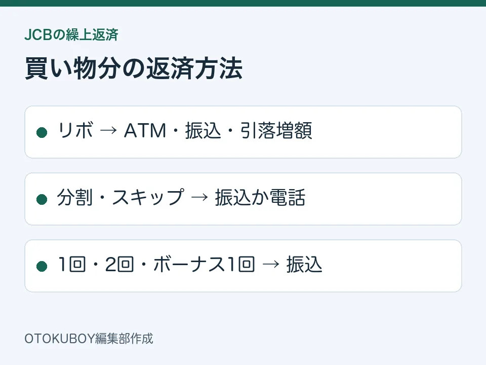
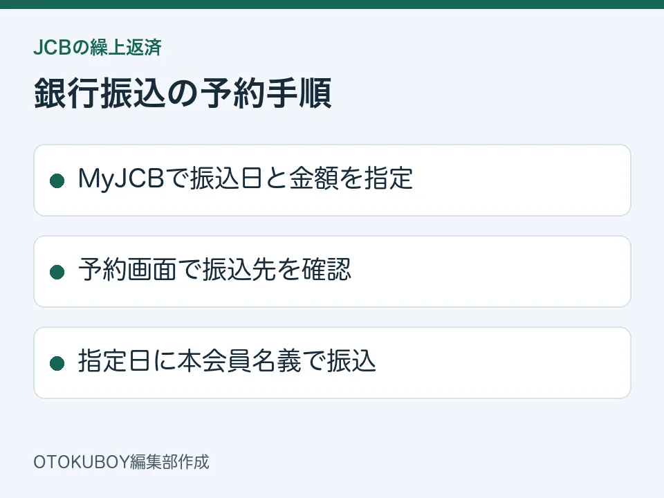

JCBで買い物分を繰上返済するやり方は、明細の支払区分で変わります。ショッピングリボならATMで元金を入金できます。ショッピング分割・スキップ払いなら指定口座への振込か、電話で引落額を増やす手続きです。1回払いを早く支払いたい場合も、公式FAQで案内されているのは振込です。ここでは株式会社ジェーシービー発行の個人カードを中心に、2026年11月27日時点の条件を示します。
01ATM・振込・引落はどの支払いに使える？
| 買い物の支払い区分 | ATM | 指定口座へ振込 | 支払日の引落を増額 |
|---|---|---|---|
| リボ | 可 | 可 | MyJCBまたは自動音声 |
| 分割・スキップ | 不可 | 可 | 自動音声 |
| 1回・2回・ボーナス1回 | 不可 | 可 | 対象外 |

分割・スキップ払いでは、利用金額の一部だけを先に支払うことはできません。カードによっては発行会社が株式会社ジェーシービー以外の場合もあります。最初に支払区分と発行会社を確認します。他社発行カードの振込については、カード裏面の発行会社へ問い合わせます。通常の引落日と利用分の区切りを確認したいときは、クレジットカードの締め日・支払い日が参考になります。
02ATMの手数料と返済の単位を比較
ATMでショッピングリボを返すときに入金するのは元金です。公式案内では、リボ払いの手数料は入金日までの日割りで計算し、通常の支払い時に自動で引き落とします。銀行ATMは原則1万円単位で、一部は1,000円単位です。セブン銀行・ローソン銀行の対象ATMは1,000円単位です。
ATM利用手数料は1回の入金が1万円以下なら110円、1万円を超えると220円で、いずれも税込です。発行会社によって、会社負担になる場合や対象ATMが異なる場合があります。専用カードなどATMでまとめ払いできないカードもあります。
例ATM手数料が自己負担で、対象ATMに8,000円を3回に分けて入金するなら、ATM手数料は110円×3回＝330円です。同じ24,000円を一度に入金できるなら220円で、差は330円−220円＝110円です。
この比較はATMの費用のみです。入金日が違う場合は、リボ手数料も合わせて比較します。銀行振込なら、利用する金融機関の振込手数料も確認します。ATMの入金単位で残高を払い切れない場合は、残りをどの方法で払うかも決めてから、手数料を合計します。
03MyJCBで振込を予約する手順
- 対象の本会員がMyJCBに入り、繰上返済の銀行振込予約を開きます。
- 振込日を指定し、確定分か未確定分かを選んで入金額を入力します。
- 予約完了画面に出た指定口座へ、指定した日と金額で本会員名義から振り込みます。
- 予約の日や金額を守れなくなったときは、いったん予約を取り消し、予約し直します。

毎月の支払日に増額する方法もあります。支払日前に入金するか、支払日に増額するかを先に決めます。後者の変更締切は支払い月や引落口座で異なるため、公式案内の締切から逆算します。
04よくある質問
コンビニATMで分割払いを繰上返済できますか？
ショッピング分割払いはATMの対象外です。指定口座への振込か、電話での引落増額を確認します。
振込先はどこで分かりますか？
対象の本会員はMyJCBで振込予約をすると、完了画面で確認できます。他社発行カードは発行会社に確認します。
ATMで払えばリボの手数料もその場で精算できますか？
ATMで入金するのは元金です。リボ手数料は入金日までの日割りで計算され、通常の支払い時に引き落とされます。
05まとめ
- MyJCBの明細で支払区分と、カード裏面などで発行会社を確認します。
- ATMに入れる単位と手数料、銀行の振込手数料を比べます。
- 銀行振込は事前予約の指定日、指定額、振込名義を確認します。